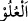
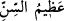
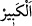
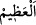

bâtılın ta kendisidir.” Onların ilahlığı bâtıldır. “Gerçek şu ki Allah, evet O, uludur,”
her şeyin üstünde ve yücedir, ortağı olmasından “büyüktür.” Şânı O’ndan daha yüce,
güç ve hâkimiyet bakımından O’ndan daha büyük bir şey yoktur.
et-Te’vîlâtü’n-Necmiyye’de der ki: “Tâliblerin O’nu ancak kendisiyle bulması
dışında O’nu bulmalarından uludur, yücedir. Vuslata erenlerin nihâyetini idrâk etmeleri
azamet sâhibidir/büyüktür.”
Bahru’l-ulûm’da şöyle der: “O şânı yüce/ulu olandır. Yâni zâtında ve fiillerinde
işi/durumu ve celâli yücedir. Şân bakımından O’ndan yüce yoktur. Çünkü O izâfeten ve
vücûb bakımından her şeyin üstündedir. Aşağının karşılığı olan “
”dendir. “Aşağılık
ve yukarılık”, mesela arş ve kürsî gibi duyularla bilinen hususlarda; peygamber ve
ümmeti, halîfe ve sultan, âlim ve öğrenci arasındaki üstünlük, şeref, kemal ve yükseklik
konusunda olan farklılık gibi akılla bilinen hususlarda kullanılır. Hak Sübhânehû cisim
olmaktan münezzeh olduğu için O’nun yüceliği birinci mânâda olmaktan münezzehtir.
Bunlar ise duyularla hissedilen şeylerdir. Bu durumda O’nun yüceliğinin ikinci mânâda
ve ona mahsus olduğu ortaya çıkmaktadır.
İmam Gazzâlî (r.h.) der ki: “Kul mutlak yüce/yüksek olarak düşünülemez. Çünkü o
hangi dereceye ulaşsa mutlaka onun üstünde bir derece vardır. Bu da peygamberlerin ve
meleklerin dereceleridir. Evet insan cinsi içerisinde kendisinin üzerinde kimsenin
olmadığı bir dereceye nâil olunması tasavvur edilebilir. Bu ise Peygamberimiz (a.s.)’ın
derecesidir. Fakat o da mutlak yüceliğe nisbetle eksiktir. Çünkü o, diğer bazı varlıklara
izâfetle bir yüceliktir. Bir başka sebep de o varlığa (vücûda) izâfetle bir yüceliktir ki
zorunluluk (vücûb) yoluyla değildir. Bilakis onun üstünde bir insanın var olması imkân
dâhilindedir. O halde mutlak yüce, yücelik ve üstünlük kendisine âid olandır. Bu ise
başkalarına izâfetle değil, vücûb (zorunluluk) yoluyladır. Yine zıddı imkân dâhilinde
olan varlık îtibâriyle de değildir.”
“O, büyüktür.” Kibriyâ (büyüklük, ululuk) sâhibidir. Bu da kendisiyle
vücûdun/varlığın kemâli kasdedilen zâtın kemâlinden ibârettir. Varlığın kemâli ise iki
şeyledir: Birincisi, her mevcûdun ondan sâdır olması. İkincisi ise devamlı olmasıdır.
Çünkü her varlık önceden veya sonradan olan bir yoklukla sınırlıdır. Onun için de
eksiktir. Bu sebeple bir insanın ömrü uzayınca ona “kebîr/büyük”, yani yaşı büyük,
dünyada kalma müddeti uzun demektir. Burada “
” ifadesi kullanılmaz. Şu halde
“
” kelimesi, “
” kelimesinin kullanılmadığı yerde kullanılır.
Kullardan büyük (kebîr) olan, kemâl sıfatları kendisine mahsus olmayan, bilakis
başkasına da sirâyet eden kâmil kimsedir. Onunla beraber olan kimseye mutlaka onun
kemâlinden bir şeyler ulaşır. Kulun kemâli aklında, vera‘ında (şüpheli şeylerden uzak
durmasında) ve ilmindedir. Öyleyse ‘büyük (kebîr)’, âlim, takvâ sahibi, halkı irşâd
eden, nurlarından ve ilimlerinden aydınlanılan bir örnek olmaya lâyık kimsedir. Bundan
dolayı Îsâ (a.s.): “Kim bilir, amel eder ve başkalarına öğretirse, böylesi göğün
melekûtunda “Azîm/büyük” diye çağrılır/adlandırılır.” buyurmuştur.